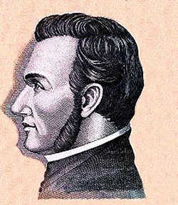
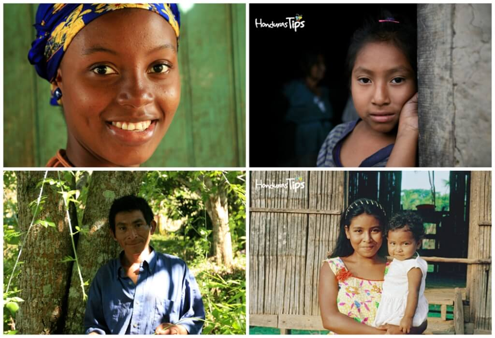
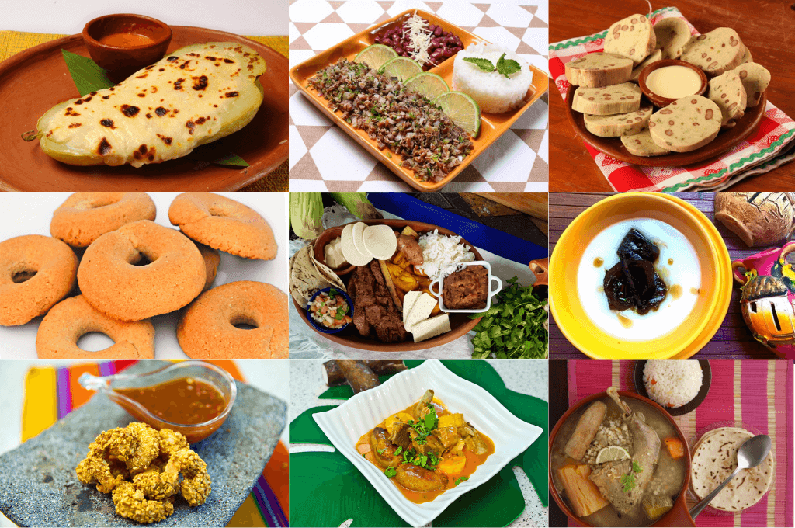

Honduras: Naturalmente Tuya
Más que un país de 5 estrellas.
¡Conoce tu tierra! Viaja a través de una selección de destinos turísticos
que te harán ver Honduras con otros ojos.
Secciones de Identidad
Pensamiento Unionista y Próceres Patrios

La visión geopolítica e intelectual de Francisco Morazán representa el baluarte del pensamiento centroamericanista. Su legado abogó por una república unida, la educación laica, la libertad de culto y el progreso social de la región. Junto a figuras como José Cecilio del Valle, sabio y redactor del Acta de Independencia; Dionisio de Herrera, primer Jefe de Estado e impulsor de las instituciones democráticas; y José Trinidad Cabañas, símbolo inquebrantable de honradez y civismo, se consolida la estructura ideológica de la patria hondureña.
Próceres Patrios Destacados
1. General Francisco Morazán
Líder militar y estadista, paladín de la Unión Centroamericana. Su ideario promovió la modernización del Estado, la educación pública universal y la consolidación de la Federación Centroamericana.
2. José Cecilio del Valle
Pensador, humanista y jurista. Redactor del Acta de Independencia de 1821, reconocido por su vasta labor intelectual en la economía, la ciencia y la política de las Américas.
3. Dionisio de Herrera
Primer Jefe de Estado de Honduras y autor de la primera Constitución de la República (1825). Su gestión sentó las bases de la organización territorial e institucional del país.
4. General José Trinidad Cabañas
Defensor de la soberanía nacional y del ideal unionista. Recordado en la historia por su integridad moral, patriotismo absoluto y servicio desinteresado a la nación.
| Prócer Patrio |
Rol Histórico |
Aportes Principales |
Periodo Destacado |
| Francisco Morazán |
Presidente de la Federación Centroamericana |
Promoción de la Unión Centroamericana, educación laica y reformas liberales. |
1792 - 1842 |
| José Cecilio del Valle |
Redactor del Asta de Independencia y Político |
Redacción del Acta de Independencia, escritos socioeconómicos y periodismo ilustrado. |
1777 - 1834 |
| Dionisio de Herrera |
Primer Jefe de Estado de Honduras |
Promulgación de la Primera Constitución Política de Honduras en 1825. |
1781 - 1850 |
| José Trinidad Cabañas |
Presidente de la República y Militar |
Defensa de la soberanía, modelo de ética pública e impulso al ferrocarril interoceánico. |
1805 - 1871 |
Reconocimiento de las Etnias Vivas

Honduras es una nación pluriétnica y multicultural. La pervivencia de sus pueblos originarios y afrodescendientes preserva lenguas ancestrales, cosmovisiones únicas, expresiones artísticas y sistemas de organización comunitaria que enriquecen el patrimonio intangible de la nación.
Pueblos Indígenas y Afrodescendientes
1. Lencas
Ubicados principalmente en los departamentos de Intibucá, Lempira y La Paz. Destacan por su alfarería tradicional, textiles artesanales de vivos colores y ritos ancestrales como el Guancasco.
2. Garífunas
Comunidad afrodescendiente asentada a lo largo de la costa caribeña. Su lengua, danza (Punta) y música fueron declaradas Obra Maestra del Patrimonio Oral e Intangible de la Humanidad por la UNESCO.
3. Misquitos
Habitantes de la región de La Mosquitia (Gracias a Dios). Mantienen sus tradiciones pesqueras y agrícolas en perfecta relación con la biodiversidad del ecosistema de manglares y la biósfera de Río Plátano.
4. Tolupanes
Asentados en la montaña de la Flor (Francisco Morazán) y Yoro. Preservan elementos de su organización tribal, la fabricación de artesanías en bambú/semillas y relatos orales tradicionales.
5. Chortís
Pueblo de filiación maya concentrado en el departamento de Copán. Conservan prácticas agrícolas tradicionales de cultivo de maíz y tabaco, junto con ceremonias dedicadas a la tierra.
| Pueblo Originario |
Ubicación Principal |
Lengua / Familia Lingüística |
Manifestación Cultural Representativa |
| Lencas |
Intibucá, Lempira, La Paz |
Lenca (Aislada / En rescate) |
Ceremonia del Guancasco y Alfarería Lenca |
| Garífunas |
Atlántida, Colón, Cortés, Islas de la Bahía |
Garífuna (Arawak) |
Danza y Música Punta, Gastronomía ancestral (Casabe) |
| Misquitos |
Gracias a Dios (La Mosquitia) |
Mískito (Misumalpa) |
Navegación en cayucos y cosmovisión de la naturaleza |
| Tolupanes |
Montaña de la Flor (FM), Yoro |
Tol (Jicaque) |
Cestería, uso de cerbatanas y organización en tribus |
| Chortís |
Copán y Ocotepeque |
Ch'orti' (Maya) |
Ritos agrícolas al Dios de la Lluvia y tallado en piedra |
Catálogo Visual de la Gastronomía Típica

La gastronomía hondureña es un reflejo de la convergencia entre ingredientes autóctonos como el maíz, el frijol y la yuca, con técnicas traídas por las comunidades afrocaribeñas e hispánicas. Cuenta con productos emblemáticos reconocidos a nivel internacional por su origen y sabor.
Platillos y Bebidas Emblemáticas
1. Baleada Tradicional
Tortilla de harina de trigo doblada por la mitad, rellenada con frijoles refritos negros o rojos, mantequilla crema y queso duro blando rallado. Es el plato urbano e icónico por excelencia de todo el país.
2. Sopa de Caracol
Especialidad de la costa caribeña elaborada con caracol marino fresco, leche de coco, plátano verde, guineo, yuca y especias locales. Un símbolo culinario inmortalizado en la cultura popular.
3. Tikin Xik Garífuna
Pescado entero marinado con achiote, especias nativas y frutos cítricos, envuelto en hojas de plátano o cocinado a las brasas. Refleja la herencia técnica marítima del pueblo garífuna.
4. Atol de Elote
Bebida caliente y cremosa de origen prehispánico elaborada a base de maíz tierno molido, cocido con leche, canela y azúcar. Servido comúnmente en huacales de morro.
5. Café de Altura con Denominación de Origen
Granos cultivados sobre los 1,200 m s. n. m. en regiones reconocidas como Marcala, Montecillos y Copán. Destaca por sus notas aromáticas complejas, acidez brillante y perfiles frutales de calidad mundial.
| Platillo / Bebida |
Región de Origen / Mayor Consumo |
Ingredientes Principales |
Distinción / Tipo |
| Baleada Tradicional |
Costa Norte / A nivel nacional |
Tortilla de harina, frijoles refritos, mantequilla, queso rallado |
Plato Emblemático Nacional |
| Sopa de Caracol |
Costa Caribe / Zona Insular |
Caracol fresco, leche de coco, yuca, plátano verde, cilantro |
Especialidad Marina Ancestral |
| Tikin Xik Garífuna |
Comunidades Garífunas (Atlántida y Colón) |
Pescado fresco, achiote, cítricos, cocción en hojas de plátano |
Patrimonio Gastronómico Garífuna |
| Atol de Elote |
Zona Central y Sur |
Maíz tierno (elote), leche, canela, azúcar |
Bebida Ancestral Tradicional |
| Café de Altura (Marcala / Copán) |
La Paz, Intibucá, Lempira, Copán |
Grano de café 100% arábica de alta montaña |
Denominación de Origen (D.O.) |